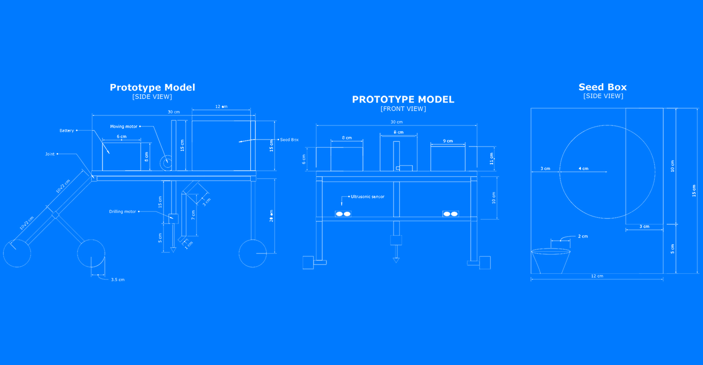
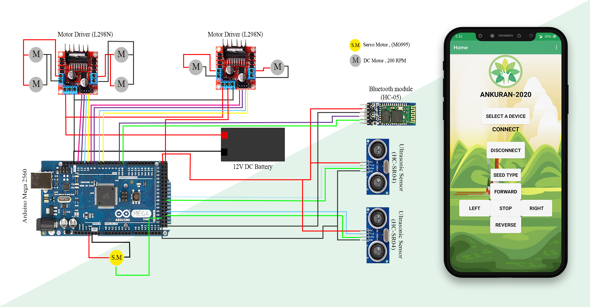

Ankuran
Low cost and affordable smart autonomous remote monitored agriculture system of seed sowing with depth and spacing control. The problem caused due to traditional seed sowing method is that the depth of seed sown and spacing between them is inaccurate which cause decrease in crop yield and wastage of seed. To overcome this we design a bot which sows the seed in desired depth and maintain the spacing between two plants which results increase in yield. The depth required for various seeds are different so thus we developed an app called “ANKURAN” in which the data of depth and spacing required for each and every seed are stored. Thus by selecting the seed type in the app , the bot will start sowing seed in desired depth and spacing between two seeds will maintained.
 Project Link
Project Link Video Link
Video Link• Design / Blueprint of Ankuran Bot
• Circuit and Android app of the bot
Covid Tracker App.
Covid india tracker app provides you the realtime data by fetching data from people which are a group of dedicated volunteers who curate and verify the data coming from several sources. They extract the details, like a patient's relationship with other patients to identify local and community transmissions, travel history and status. They never collect or expose any personally identifiable data regarding the patients. Data is fetched from www.covid19india.org.
Note Keeper App.
This is a good helper to manage your notes. It makes easy and fast navigation between notes. It gives you a quick and simple notepad when you write notes, memo, shopping lists etc.
Quiz App.
Knowledge is power. Test your General Knowledge! A fun quiz of world maps. It consists of 10 world maps or questions with 4 options, a countdown timer, etc. It is an android app made using Kotlin.